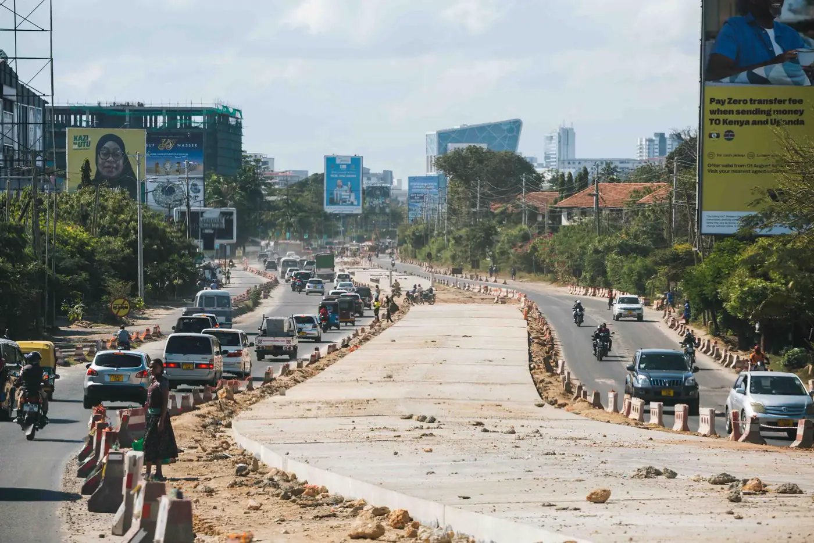

Urban road rehabilitation
A town route rebuilt under live traffic. The works replaced failed pavement, corrected the camber and connected side drains to the existing stormwater line.
- Traffic management in two phases, one lane open throughout
- Subgrade repair, selected fill and compacted base course
- Kerbs, side drains and pedestrian crossings
- Bituminous surfacing and road markings